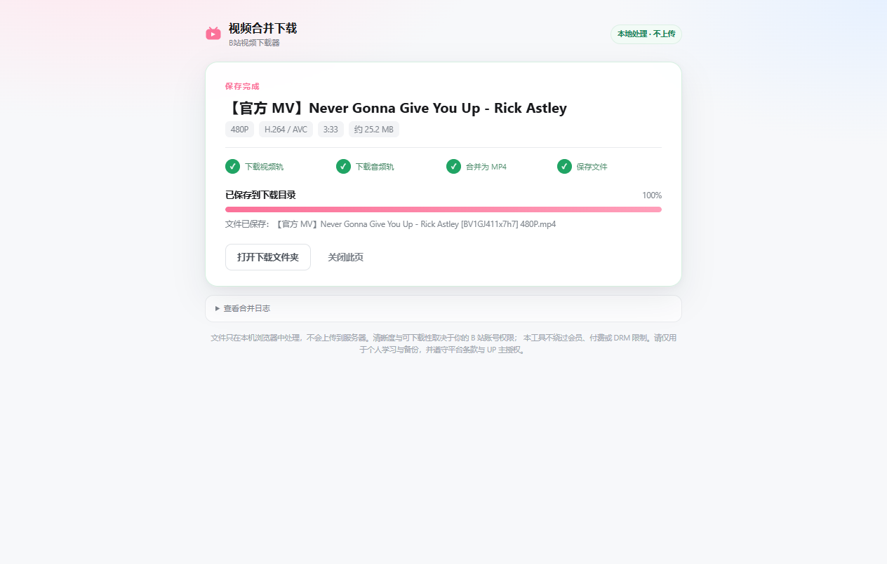

一键合并 MP4
分别下载视频轨和音频轨，用本地 ffmpeg.wasm 封装，不重新编码，画质不二次损失。
一个 B 站普通视频下载扩展。多 P、清晰度选择、H.264 / HEVC / AV1， 音视频在本机合并为完整 MP4，不经过任何服务器。
不绕过会员、付费或 DRM；只处理你本来就能正常观看的公开视频。
分别下载视频轨和音频轨，用本地 ffmpeg.wasm 封装，不重新编码，画质不二次损失。
按账号实际权限展示可用清晰度，支持 H.264、HEVC、AV1，自动优先兼容性更好的编码。
自动读取视频分 P，切换后重新解析，适合课程、纪录片、系列视频。
需要剪辑时分别保存视频/音频轨道；也可以只保存 M4A 音频。
下载、合并、保存都在浏览器本机完成；没有自建服务器，不上传视频和账号信息。
代码公开，GPL-2.0-or-later；ffmpeg.wasm 本地打包，版本和哈希记录在第三方声明中。
当前是开发者加载版，需要 Chrome / Edge 的「加载已解压」功能。
下载 ZIP，并解压到一个固定目录。
打开 chrome://extensions/ 或 edge://extensions/。
开启右上角「开发者模式」。
点击「加载已解压的扩展程序」，选择包含 manifest.json 的文件夹。

下载页会显示视频轨、音频轨和合并进度如果这里没有答案，欢迎到 GitHub Issues 提问。
Chrome 稳定版会阻止非 Chrome Web Store 的扩展。当前版本通过 GitHub 发布 ZIP，需要用「加载已解压」方式安装；后续会尝试上架商店。
清晰度取决于你的 B 站账号权限。未登录通常只有 360P / 480P；登录后才会出现账号可用的更高清晰度。扩展不会伪造权限。
请使用「下载并合并 MP4」，不要选「分别下载」。如果合并失败，可以分别保存视频和音频，再用本地 ffmpeg 合并。
不会。扩展没有自建服务器；视频流在本地下载，合并也在本地完成。B 站 Cookie 只用于向 B 站接口请求你本来就能观看的内容。
当前不支持，也不打算绕过会员、付费或 DRM。只处理普通公开视频，避免给用户和项目带来不必要的法律风险。
下载新 ZIP 解压覆盖旧目录，然后在扩展管理页点击刷新，再刷新 B 站页面。
仅用于个人学习与备份，请遵守 B 站用户协议、社区规则和 UP 主授权。不要将下载内容用于二次传播、商业使用或规避平台限制。
本项目与哔哩哔哩官方无关联。B 站名称及相关商标归其权利人所有；扩展只作为个人工具使用。